Tutoral 7 – Access SocketPro by Use of HTTP and WebSocket
Contents:
Introduction
Server side
· Testing server settings
· Enable HTTP/websocket service
· Process HTTP/websocket requests and message pushes
o HTTP/websocket authentication within SocketPro
o Deal with common HTTP requests
o HTTP/websocket user defined requests
o HTTP/websocket message pushes
Browser side
· Reference uloader.js
· One function for tracking SocketPro JavaScript adapter loading event
· Create a websocket object and set event handlers
· Send messages from browsers by use of JavaScript
· Send your own defined requests
· Turn on JavaScript debug information
1. Introduction
HTTP is created as a request-response protocol with client-server computing model. HTTP is extensively employed by web browsers. HTTP is also widely used for cross-company and smart phone device-server communications through web service. Although it is popular, it has its own flaws such as large overhead, no server callback functionality and no bidirectional communication. Recently, web communities propose web socket to solve these flaws of HTTP. At this time, major browsers and development framework libraries as well as many server applications support web socket.
Therefore, our SocketPro server is written to fully support both HTTP and web socket protocols so that you can access a SocketPro server from web browsers, smart-phone devices (android, iPhone, win phone, etc) and others in case you cannot use SocketPro client components.
The tutorial project is located at the directory ..\tutorials\(csharp|vbnet|cplusplus|java\src|python)\webdemo.
2. Server side
Testing server settings: When running this sample server, copy socketpro helper js files as well as testing files into the directory where testing server application is located, as described in Figure 1 below.
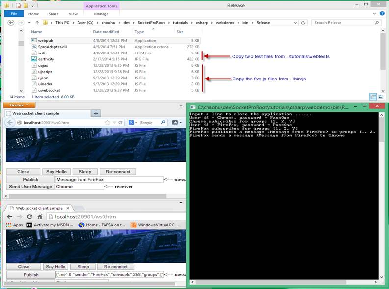
Figure 1: Settings and helper files for this tutorial SocketPro server
Enable HTTP/websocket service: It is very easy to enable HTTP and web socket service at SocketPro server as shown in the Figure 2.
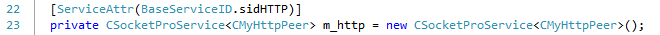
Figure 2: Enable HTTP/websocket service within SocketPro server
Process HTTP/websocket requests and message pushes: As shown in Figure 1 below, you can derive your peer class from CHttpPeerBase for processing all requests and chat messages from HTTP and websocket protocols.
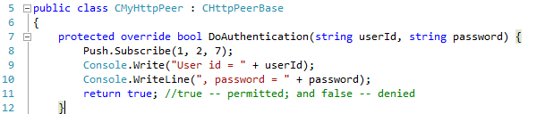
Figure 3: Derive your http peer class from CHttpPeerBase, HTTP/websocket authentication, and chat topics subscription
HTTP/websocket authentication within SocketPro: You can do authentication for HTTP and websocket by overriding the virtual function DoAuthentication as shown in lines 7 through 12 in Figure 3 above. As shown in line 8 and within tutorial 2, you can subscribe to one or more chat topics at SocketPro server side on behalf of a client.
Deal with common HTTP requests: SocketPro supports eight HTTP RFC-2616 methods, OPTIONS, GET, POST, HEAD, PUT, DELETE, TRACE and CONNECT. You can use them by overriding the function OnGet, OnPost, and so on, as shown in Figure 4 below.
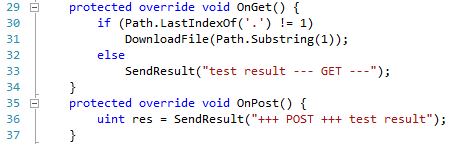
Figure 4: Use HTTP methods within SocketPro by overriding OnXXX virtual functions
HTTP/websocket user defined requests: If you use SocketPro adapter for Javascipt at browser side, you can easily send your own requests with any types/or structures and number of input parameters onto a SocketPro server for processing as shown in Figure 5 below. We’ll show you JavaScript code in the coming section Browser side.
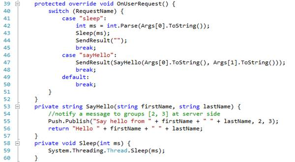
Figure 5: Process user-defined HTTP/websocket requests at SocketPro server side
HTTP/websocket message pushes: SocketPro supports publishing messages or sending a message to a user as shown in Figure 6 below. After comparing this code snippet with server side code of tutorial 2, we determine that they are both exactly the same.
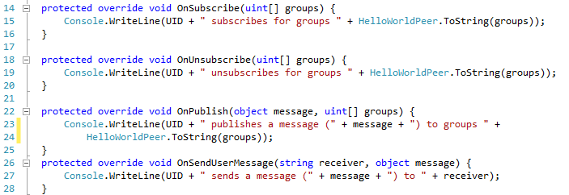
Figure 6: Message pushes supported with SocketPro HTTP/websocket service
3. Browser side
Reference uloader.js: At first, you need to refer to the file uloader.js for loading SocketPro JavaScript adapter from a server onto a browser as shown in Figure 7 below.
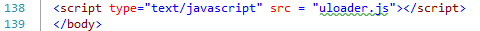
Figure 7: Refer to uloader.js for loading SocketPro JavaScript adapter from server onto a browser
One function for tracking SocketPro JavaScript adapter loading event: Next, it is recommended that you set a global function named onUHTTPLoaded to track SocketPro JavaScript adapter loading event as shown in Figure 8 below.
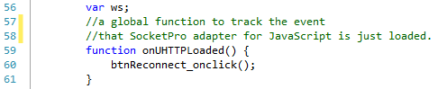
Figure 8: A global function onUHTTPLoaded for tracking SocketPro JavaScript adapter loading event
Create a websocket object and set event handlers: Next, we need to create a web socket object with user id and password as shown in line 68 as demonstrated in Figure 9 below. Additionally, you also need to set two event handlers for socket-connected in line 69 and socket-closed in line 75.
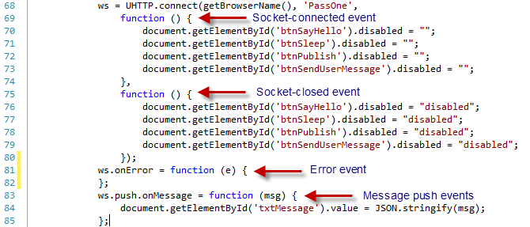
Figure 9: Create a websocket object and set various event handlers
As shown in lines 81 and 83, we need to set event handlers for onError and onMessage. SocketPro also supports the above calls through AJAX for the same domain and JavaScript script for cross-domain communications. However, the last two approaches may be not supported if most people do not use IE 9 or previous versions of browsers.
Send messages from browsers by use of JavaScript: Next, as shown in Figure 10 below, you can publish messages from one browser to other browsers, servers or windows, or send a message to a user anywhere as we did at tutorial 2.
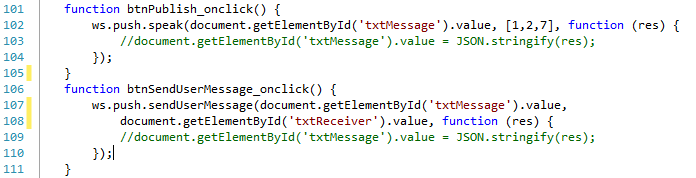
Figure 10: Send messages from browser to anywhere
Send your own defined requests: Finally, you can send a request with any number and type of parameters to a SocketPro server for processing as shown in Figure 11. From the call end, you should also set a callback at the end for processing a returning result from a remote SocketPro server.
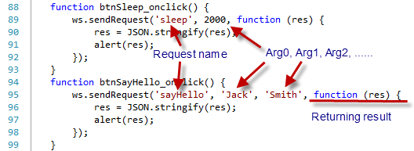
Figure 11: Send requests to SocketPro server for processing
Turn on JavaScript debug information: Finally, you may like to turn on JavaScript adapter debug information inside the file uloader.js as shown in the Figure 12.
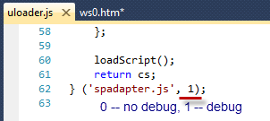
Figure 12: Turn on or off SocketPro JavaScript adapter debug log
Once you turn on adapter debug log, you can see logged transaction JSON strings as shown in Figure 13 below.
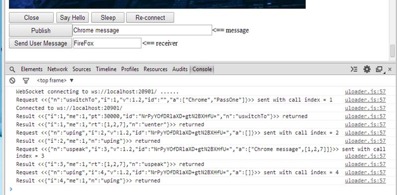
Figure 13: Sample logged transaction JSON strings from SocketPro JavaScript adapter